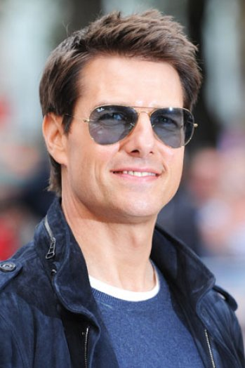

Tom Cruise was born on July 3, 1962, in Syracuse, New York. After developing an interest in acting during high school, he rocketed to fame with his star turns in Risky Business and Top Gun. Cruise later earned acclaim for his work in the hit film Jerry Maguire and the Mission: Impossible franchise. He also was targeted by the tabloids for his marriages to actresses Nicole Kidman and Katie Holmes.
Thomas Cruise Mapother IV, better known as Tom Cruise, was born on July 3, 1962, in Syracuse, New York, to Mary and Thomas Mapother. Cruise's mother was an amateur actress and schoolteacher, and his father was an electrical engineer. His family moved around a great deal when Cruise was a child in order to accommodate his father's career.
Cruise set a 10-year deadline for himself in which to build an acting career. He left school and moved to New York, struggling through audition after audition before landing an appearance in 1981's Endless Love, starring Brooke Shields. Around this same time, he snagged a small role in the military school drama Taps (1981), co-starring Sean Penn.
His next film, Risky Business (1983), grossed $65 million. It also made Cruise a highly recognizable actor—thanks in no small part to a memorable scene of the young star dancing in his underwearCruise followed the tremendous success of Top Gun with a string of both critically acclaimed and commercially successful films. He first starred in The Color of Money (1986), with co-star Paul Newman, and then went on to work with Dustin Hoffman on Rain Man (1988). Cruise's next role, as Vietnam veteran Ron Kovic in the biopic Born on the Fourth of July (1989), earned him an Academy Award nomination and a Golden Globe for Best Actor.
Cruise married actress Mimi Rogers in 1987. It was through Rogers that the actor became a student of Scientology, the religion founded by writer L. Ron Hubbard. Cruise credited the church with curing his dyslexia, and he soon became one of its leading proponents. However, while his spiritual life flourished, his marriage to Rogers ended in 1990.
In 1992, Cruise proved once more that he could hold his own opposite a screen legend when he co-starred with Jack Nicholson in the military courtroom drama A Few Good Men. The film grossed more than $15 million its first weekend, and earned Cruise a Golden Globe nomination. He continued to demonstrate his chops as a leading man with The Firm (1993) and Interview with a Vampire (1994), which co-starred Brad Pitt. Next, Cruise hit the big screen with two huge hits—the $64 million blockbuster Mission: Impossible (1996), which the star also produced, and the highly acclaimed Jerry McGuire (1996), directed by Cameron Crowe. For the latter, Cruise earned a second Academy Award nomination and Golden Globe for Best Actor.
firstly i clear you that when i take the cse stream , i don't even know that what computer science is but after attending front end flash classes iam very happy that iam going on a right path. all the credits goes to the cess team ,behind the making of this web site they teach me how to practice, how to give full potential in doing a work , my friends also help me alot who knows something about computer languages .thanks all of them by heart(:
regards: GIRISH MEHRA